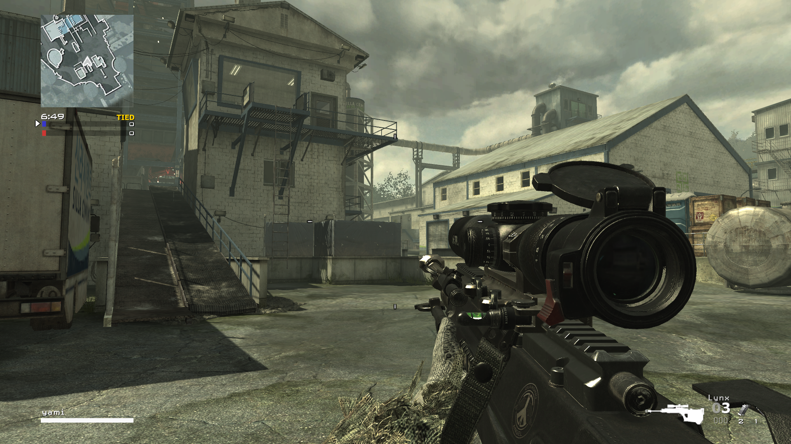
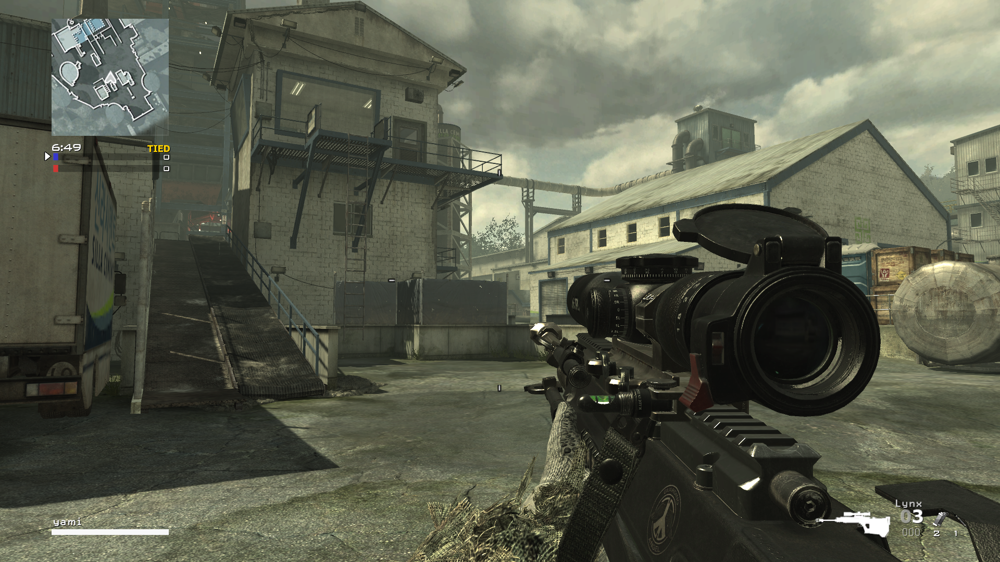

What We've Been Up To?
It's been a while hasn't it?
The IW4SB team has been hard at work rehauling the ENTIRE mod! We know a lot of you just want to play already, but we are really aiming to bring something new and refreshing to you guys, not just a mod thrown together using random assets.
Currently, we have had two main goals: Maps and Weapons. What's a game without the base? At the time, we currently have around 10 more weapons to add in, and the rest to tweak / make QOL adjustments to!
We've attached some preview images below for you guys to get an idea! Here's some of the things we've implemented/tweaked recently :
- Added Field Orders + Custom F.O. Challenge Hud
- Upgraded Hit Detection! Know if your hit was a headshot hit, body hit, body kill, or a headshot kill!
- New Main Menu + In-Game UI
- New Equipment! Say goodbye to claymores and C4...
- COD: Ghosts Inspired Sliding Mechanics Added!
- Various New Gamemodes! We've Picked Up Where COD Left Off On Many Unfinished Game Types...
**IW4SB is AND always will remain a mod. IW4SB is not a new game client and WILL require a legal copy of the original Call of Duty: MW2 (2009) Game.**
 
